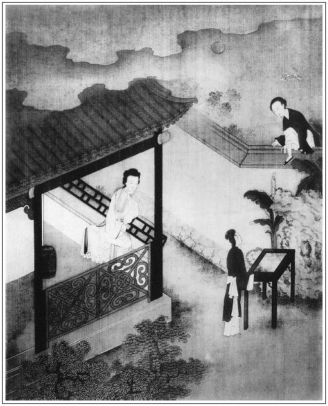

張回此下單講瓶兒矣。撞見瓶兒，必寫子虛請來，自己引賊入室，見交匪類之報，又見托人之失。
描瓶兒勾情處，純以憨勝，特與金蓮相反，以便另起花樣，不致犯手也。若王六兒，又特犯金蓮而弄不犯之巧者也。此書可謂無法不備。
寫瓶兒幾番得露春信，俱用子虛往院中作間。見得不能修身，刑於寡妻之報必至如此也。可畏，可畏！清西門往院中去一引，後用院中灌醉一間，剛兩番勾挑已出。末用屢屢安下伯爵、希大語一總，下即借此意串下，寫一無數打總勾挑處。末又以一番白話作結。作圓滿相。真描神妙筆也。
金蓮、瓶兒。勢不得不始合者也。然作者之巧，即以花園相逅作紐，使瓶兒即心眼注定金蓮，全是自己心事出現。真是史遷再世。
寫瓶兒春意，一用迎春眼中，再用金蓮口中，再用手卷一影，再用金蓮看手卷傚尤一影，總是不用正筆，純用烘雲托月之法。而迎春蹤跡，金蓮固寵根由，又為理星一點，月娘罪案不言皆早矣。文筆之巧如此。
人知迎春偷覷為影寫法，不知其於瓶兒佈置偷情，西門虛心等待，只用「只聽得趕狗關門」數字，而兩邊情事，兩人心事，俱已入化矣。真絕妙史筆也。
詞曰：
繡面芙蓉一笑開，斜飛寶鴨襯香腮。眼波才動被人猜。
一面風情深有韻，半箋嬌恨寄幽懷。月移花影約重來。張夾此詞另出手眼，自是瓶兒人物。
──右調《山花子》

話說一日西門慶往前邊走來，到月娘房中。月娘告說：「今日花家使小廝拿帖來，請你吃酒。」西門慶觀看帖子，寫著：「即午院中吳銀家一敘，希即過我同往，萬萬！」張旁大書子虛引賊入室。少頃，打選衣帽，叫了兩個跟隨，騎疋駿馬，先逕到花家。不想花子虛不在家了。張夾子虛請來卻又放過。他渾家李瓶兒，夏月間戴著銀絲䯼髻，金鑲紫瑛墜子，藕絲對衿衫，白紗挑線鑲邊裙，裙邊露一對紅鴛鳳嘴尖尖趫趫小腳，立在二門裡台基上。那西門慶三不知走進門，兩下撞了個滿懷。繡眉此一撞，可謂五百年風流業冤。張夾無心耶，有心耶？識者辨之。這西門慶留心已久，雖故莊上見了一面，張夾補。不曾細玩。今日對面見了，見他生的甚是白淨，五短身才，瓜子面兒，細灣灣兩道眉兒，張夾又描寫。不覺魂飛天外，忙向前深深作揖。婦人還了萬福，轉身入後邊去了。使出一個頭髮齊眉的丫鬟來，名喚繡春，請西門慶客位內坐。他便立在角門首，半露嬌容說：「大官人少坐一時。他適才有些小事出去了，便來也。」丫鬟拿出一盞茶來，西門慶吃了。婦人隔門說道：「今日他請大官人往那邊吃酒去，好歹看奴之面，繡旁托熟得妙。張夾四字和身托出。勸他早些回家。兩個小廝又都跟去了，張旁底細言之。止是這兩個丫鬟和奴，家中無人。」繡旁深心語。西門慶便道：「嫂子見得有理，哥家事要緊。嫂子既然吩咐在下，在下一定伴哥同去同來。」張夾一番勾挑。
正說著，只見花子虛來家，婦人便回房去了。花子虛見西門慶敘禮說道：「蒙哥下降，小弟適有些不得已小事出去，失迎，恕罪！」於是分賓主坐下，便叫小廝看茶。須臾，茶罷。又吩咐小廝：「對你娘說，看菜兒來，我和西門爹吃三杯起身。今日六月二十四，是院內吳銀姐生日，請哥同往一樂。」西門慶道：「二哥何不早說？」即令玳安：「快家去，討五錢銀子封了來。」張夾映出子虛的表子。花子虛道：「哥何故又費心？小弟到不是了。」西門慶見左右放桌兒，說道：「不消坐了，咱往裡邊吃去罷。」花子虛道：「不敢久留，哥略坐一回。」少傾，就是齊整餚饌拿將上來，銀高腳葵花鐘，每人三鐘，又是四個卷餅，吃畢收下來與馬上人吃。
少傾，玳安取了分資來，一同起身上馬，逕往吳四媽家與吳銀兒做生日。到那裡，花攢錦簇，歌舞吹彈，飲酒至一更時分方散。西門慶留心，把子虛灌得酩酊大醉。張夾可惡。又因李瓶兒央浼之言，相伴他一同來家。張夾伴他來家，是說話的引子。故灌醉了，又伴他來。小廝叫開大門，扶到他客位坐下。李瓶兒同丫鬟掌著燈燭出來，把子虛攙扶進去。西門慶交付明白，就要告回。婦人旋走出來，拜謝張夾機關明甚。西門慶，說道：「拙夫不才貪酒，多累看奴薄面，繡旁就肯認帳，妙。姑待來家，官人休要笑話。」那西門慶忙屈身還喏，說道：「不敢。嫂子這裡吩咐，在下敢不銘心刻骨，同哥一搭裡來家！非獨嫂子耽心，顯的在下幹事不的了。方才哥在他家，被那些人纏住了，我強著催哥起身。走到樂星堂兒門首粉頭鄭愛香兒家，繡旁妙想。張夾百忙與瓶兒講話時，又與鄭月兒安根，妙，妙。──小名叫做鄭觀音，生的一表人物，哥就要往他家去，被我再三攔住，勸他說道：『恐怕家中嫂子放心不下。』張夾活賊。方才一直來家。若到鄭家，便有一夜不來。繡眉討好綽趣，無一語不在個中。嫂子在上，不該我說，哥也糊塗，嫂子又青年，繡旁尖。偌大家室，如何就丟了，成夜不在家？是何道理！」婦人道：「正是如此，奴為他這等在外胡行，不聽人說，奴也氣了一身病痛在這裡。繡眉語語情見乎辭。瓶兒雖淫，畢竟醇厚。往後大官人但遇他在院中，好歹看奴薄面，勸他早早回家。奴恩有重報，不敢有忘。」繡旁一語覺瓊瑤，木桃猶淺。這西門慶是頭上打一下腳底板響的人，積年風月中走，甚麼事兒不知道？今日婦人到明明開了一條大路，教他入港，豈不省腔！於是滿面堆笑道：「嫂子說那裡話！相交朋友做甚麼？張夾此語卻如此用，可憐！我一定苦心諫哥，嫂子放心。」婦人又道了萬福，又叫小丫鬟拿了一盞果仁泡茶來。西門慶吃畢茶，說道：「我回去罷，嫂子仔細門戶。」遂告辭歸家。張夾又一番勾挑。
自此西門慶就安心設計，圖謀這婦人，屢屢安下應伯爵、謝希大這夥人，把子虛掛住在院裡飲酒過夜。他便脫身來家，一徑在門首站立。這婦人亦常領著兩個丫鬟在門首。西門慶看見了，便揚聲咳嗽，一回走過東來，又往西去，繡旁舊手段。或在對門站立，把眼不住望門裡睃盼。婦人影身在門裡，見他來便閃進裡面，見他過去了，又探頭去瞧。兩個眼意心期，張夾四字奇絕。已在不言之表。張夾又一無數名堂挑。一日，西門慶正站在門首，忽見小丫鬟繡春來請。西門慶故意問道：「姐姐請我做甚麼？你爹在家裡不在？」繡春道：「俺爹不在家，娘請西門慶爹問句話兒。」這西門慶得不的一聲，連忙走過來，到客位內坐下。良久，婦人出來，道了萬福，便道：「前日多承官人厚意，奴銘刻於心，知感不盡。他從昨日出去，一連兩日不來家了，不知官人曾會見他來不曾？」西門慶道：「他昨日同三四個在鄭家吃酒，我偶然有些小事就來了。今日我不曾得進去，不知他還在那裡沒在。若是我在那裡，恐怕嫂子憂心，有個不催促哥早早來家的？」婦人道：「正是這般說。奴吃煞他不聽人說、在外邊眠花臥柳不顧家事的虧。」張夾反覆只是此言，正是入神出化之筆寫出來者。西門慶道：「論起哥來，仁義上也好，只是有這一件兒。」說著，小丫鬟拿茶來吃了。西門慶恐子虛來家，不敢久戀，就要告歸。婦人又千叮萬囑，央西門慶：「不拘到那裡，好歹勸他早來家，奴一定恩有重報，決不敢忘官人！」繡眉好歹只此一語，愈見瓶兒醇厚。西門慶道：「嫂子沒的說，我與哥是那樣相交！」說畢，西門慶家去了。
到次日，花子虛自院中回家，婦人再三埋怨說道：「你在外邊貪酒戀色，多虧隔壁西門大官人，兩次三番顧睦你來家。你買分禮兒謝謝他，方不失了人情。」張夾無情無理，而子虛乃連忙依從，所以為子虛也。那花子虛連忙買了四盒禮物，一罈酒，使小廝天福兒送到西門慶家。西門慶收下，厚賞來人去了。吳月娘便問說：「花家如何送你這禮？」西門慶道：「花二哥前日請我們在院中與吳銀兒做生日，醉了，被我攙扶了他來家；又見常時院中勸他休過夜，早早來家。他娘子兒因此感我的情，想對花二哥說，故買此禮來謝我。」繡眉一人開口，便著一人之痛癢，所以為妙。張夾獨照瓶兒。吳月娘聽了，與他打個問訊，說道：「我的哥哥，你自顧了你罷，又泥佛勸土佛！你也成日不著個家，在外養女調婦，反勸人家漢子！」張夾寫月娘為後文上氣作因。又道：「你莫不白受他這禮？」因問：「他帖上兒寫著誰的名字？若是他娘子的名字，今日寫我的帖兒，請他娘子過來坐坐，他也只恁要來咱家走走哩。繡眉瓶兒蓄意已久，此語恍惚為瓶兒傳神。若是他男子漢名字，隨你請不請，我不管你。」西門慶道：「是花二哥名字，我明日請他便了。」次日，西門慶果然治酒，請過花子虛來，吃了一日酒。歸家，李瓶兒說：「你不要差了禮數。咱送了他一分禮，他到請你過去吃了一席酒，你改日還該治一席酒請他，只當回席。」
光陰迅速，又早九月重陽。張夾記清。知後帶病之晏，為必於重陽都，可想。花子虛假著節下，叫了兩個妓者，具柬請西門慶過來賞菊。又邀應伯爵、謝希大、祝實念、孫天化四人相陪。傳花擊鼓，歡樂飲酒。有詩為證：
烏兔循環似箭忙，人間佳節又重陽。
千枝紅樹妝秋色，三徑黃花吐異香。
不見登高烏帽客，還思捧酒綺羅娘。
秀簾瑣闥私相覷，從此恩情兩不忘。
當日，眾人飲酒到掌燈之後，西門慶忽下席來外邊解手。不防李瓶兒正在遮隔子邊站立偷覷，兩個撞了個滿懷，繡眉此一撞未必無心。西門慶迴避不及。婦人走到西角門首，暗暗使繡春黑影裡走到西門慶跟前，低聲說道：「俺娘使我對西門爹說，少吃酒，早早回家。晚夕，娘如此這般要和西門爹說話哩。」西門慶聽了，歡喜不盡。小解回來，到席上連酒也不吃，唱的左右彈唱遞酒，只是裝醉不吃。看看到一更時分，那李瓶兒不住走來廉外，見西門慶坐在上面，只推做打盹。那應伯爵、謝希大，如同釘在椅子上，白不起身。熬的祝實念、孫寡嘴也去了，他兩個還不動。把個李瓶兒急的要不的。西門慶已是走出來，被花子虛再不放，說道：「今日小弟沒敬心，哥怎的白不肯坐？」西門慶道：「我本醉了，吃不去。」於是故意東倒西歪，教兩個扶歸家去了。應伯爵道：「他今日不知怎的，白不肯吃酒，吃了不多酒就醉了。既是東家費心，難為兩個姐兒在此，拿大鐘來，咱每再週四五十輪，散了罷。」張旁故作緩筆，襯瓶兒之急也。李瓶兒在簾外聽見，罵「涎臉的囚根子」不絕。暗暗使小廝天喜兒請下花子虛來，吩咐說：「你既要與這夥人吃，趁早與我院裡吃去。休要在家裡聒噪。我半夜三更，熬油費火，我那裡耐煩！」花子虛道：「這咱晚我就和他們院裡去，也是來家不成，你休再麻犯我。」婦人道：「你去，我不麻犯便了。」這花子虛得不的這一聲，走來對眾人說：「我們往院裡去。」應伯爵道：「真個？休哄我。你去問聲嫂子來，咱好起身。」子虛道：「房下剛才已是說了，教我明日來家。」謝希大道：「可是來，自吃應花子這等嘮叨。哥剛才已是討了老腳來，咱去的也放心。」於是連兩個唱的，都一齊起身進院。此時已是二更天氣，天福兒、天喜兒跟花子虛等三人，張夾收拾過兩個小廝。從新又到後巷吳銀兒家去吃酒不題。
單表西門慶推醉到家，走到金蓮房裡，剛脫了衣裳，就往前邊花園裡去坐，單等李瓶兒那邊請他。良久，只聽得那邊趕狗關門。繡旁寫出驚心。少傾，只見丫鬟迎春黑影影裡扒著牆，推叫貓，繡眉趕狗留貓，俗事一經點察，覺竹聲花影無此韻致。張夾所謂如此這般者也。牆一現。看見西門慶坐在亭子上，遞了話。這西門慶就掇過一張桌凳來踏著，暗暗扒過牆來，張夾牆二。這邊已安下梯子。李瓶兒打發子虛去了，已是摘了冠兒，亂挽烏雲，素體濃妝，立在穿廊下。繡旁悄悄冥冥。看見西門慶過來，歡喜無盡，忙迎接進房中。燈燭下，早已安排一桌齊整酒餚果菜，壺內滿貯香醪。婦人雙手高擎玉斝，親遞與西門慶，深深道個萬福：「奴一向感謝官人，蒙官人又費心酬答，使奴家心下不安。今日奴自治了這杯淡酒，請官人過來，聊盡奴一點薄情。繡眉此何時，又作酬謝語，不幾迂而可笑。然此迂而可笑處，正隱隱畫出瓶兒之為人，不然，則又一金蓮矣。又撞著兩個天殺的涎臉，只顧坐住了，急的奴要不的。剛才吃我都打發到院裡去了。」西門慶道：「只怕二哥還來家麼？」婦人道：「奴已吩咐過夜不來了。兩個小廝都跟去了。家裡再無一人，只是這兩個丫頭，一個馮媽媽看門首，他是奴從小兒養娘心腹人。前後門都已關閉了。」西門慶聽了，心中甚喜。兩個於是並肩疊股，交杯換盞，飲酒做一處。迎春旁邊斟酒，繡春往來拿菜兒。吃得酒濃時，錦帳中香熏鴛被，設放珊瑚，兩個丫鬟撤開酒桌，拽上門去了。兩人上床交歡。
原來大人家有兩層窗寮，外面為窗，裡面為寮。婦人打發丫鬟出去，關上裡面兩扇窗寮，房中掌著燈燭，外邊通看不見。這迎春丫頭，今年已十七歲，張旁方結到迎春，有春雲漸吐，流水歸源之妙。頗知事體，見他兩個今夜偷期，悄悄向窗下，用頭上簪子挺簽破窗寮上紙，往裡窺覷。張夾寫瓶兒家，特特與金蓮作貧富對照也。而瓶兒必用迎春眼中照出，固為迎春作地。二者為瓶兒少留身份，不似金蓮之盡情不堪也。端的二人怎樣交接？但見：
燈光影裡，鮫綃帳中，一個玉臂忙搖，一個金蓮高舉。一個鶯聲嚦嚦，一個燕語喃喃。好似君瑞遇鶯娘，猶若宋玉偷神女。山盟海誓，依稀耳中；蝶戀蜂恣，未能即罷。
正是：
被翻紅浪，靈犀一點透酥胸；帳挽銀鉤，眉黛兩彎垂玉臉。張夾看其句句是迎春眼中，故妙。
房中二人雲雨，不料迎春在窗外，聽看得明明白白。聽見西門慶問婦人多少青春。李瓶兒道：「奴今年二十三歲。」因問：「他大娘貴庚？」西門慶道：「房下二十六歲了。」婦人道：「原來長奴三歲，到明日買分禮兒過去，看看大娘，只怕不好親近。」繡眉自是一片結識深情，非枕邊間語也。西門慶道：「房下自來好性兒。」婦人又問：「你頭裡過這邊來，他大娘知道不知？倘或問你時，你怎生回答？」西門慶道：「俺房下都在後邊第四層房子裡，張夾然則月娘房後算，雪娥第五層，廚房第六層，下房七層也。惟有我第五個小妾潘氏，在這前邊花園內，獨自一所樓房居住，他不敢管我。」婦人道：「他五娘貴庚多少？」西門慶道：「他與大房下同年。」婦人道：「又好了，若不嫌奴有玷，奴就拜他五娘做個姐姐罷。到明日，討他大娘和五娘的腳樣兒來，奴親自做兩雙鞋兒過去，以表奴情。」張夾寫瓶兒一味熱急淺露，到後文一絲不亂也。說著，又將頭上關頂的金簪兒撥下兩根來，替西門慶帶在頭上，說道：張夾一「說著」，一「說道」，俱是迎春耳中照出也。「若在院裡，休要叫花子虛看見。」西門慶道：「這理會得。」當下二人如膠似漆，盤桓到五更時分。窗外雞叫，張夾打狗關門，喚貓上牆，雞叫過牆，妙絕情事。東方漸白，西門慶恐怕子虛來家，整衣而起，照前越牆而過。張夾牆三。兩個約定暗號兒，但子虛不在家，這邊就使丫鬟在牆頭上張夾牆四。暗暗以咳嗽為號，或先丟塊瓦兒，見這邊無人，方才上牆，張夾牆五。這邊西門慶便用梯凳扒過牆來。張夾牆六。兩個隔牆酬和，竊玉偷香，不由大門行走，街房鄰舍怎的曉得？張眉此上一段，以迎春影瓶兒。有詩為證：
月落花陰夜漏長，相逢疑是夢高唐。
夜深偷把銀缸照，猶恐憨奴瞰隙光。張旁結住迎春。
卻說西門慶扒過牆來，張夾須還是頭一次過來者。此句直接照前「越牆而過」一句，中間是作者夾敘後文也。走到潘金蓮房裡。金蓮還睡未起，因問：「你昨日也不知又往那裡去了這一夜？也不對奴說一聲兒。」西門慶道：「花二哥又使小廝邀我往院裡去，吃了半夜酒，才脫身走來家。」金蓮雖故信了，還有幾分疑影在心。一日，同孟玉樓飯後張夾又以玉樓襯出。在花園亭子上做針指，猛可見一塊瓦兒打在面前。那孟玉樓低著頭納鞋，沒看見。這潘金蓮單單把眼四下觀看，影影綽綽只見隔壁牆頭上一個白面探了一探，就下去了。金蓮忙推玉樓，指與他瞧，說道：「三姐姐，你看這個，是隔壁花家那大丫頭，想是上牆瞧花兒，張夾牆八。看見俺們在這裡，他就下去了。」說畢，也就罷了。張夾又一頓。到晚夕，西門慶自外赴席來家，進金蓮房中。金蓮與他接了衣裳，問他。飯不吃，茶也不吃，趔趄著腳兒，只往前邊花園裡走。繡旁心虛偏有此景。這潘金蓮賊留心，暗暗看著他。坐了好一回，只見先頭那丫頭在牆頭上打了個照面，張夾牆九。這西門慶就踏著梯凳過牆去了。張夾牆十。那邊李瓶兒接入房中，兩個廝會不題。
這潘金蓮歸到房中，翻來覆去，通一夜不曾睡。將到天明，只見西門慶過來，推開房門，婦人睡在床上，不理他。張旁金蓮蓋因此一機，細想何以挾制西門之法，欲報受辱以後之事，非一味然酸。那西門慶先帶幾分愧色，挨近他床上坐下。婦人見他來，跳起來坐著，一手撮著他耳朵，罵道：「好負心的賊！你昨日端的那裡去來？把老娘氣了一夜！你原來干的那繭兒，我已是曉得不耐煩了！繡眉映出聽籬察壁心腸。趁早實說，從前已往，與隔壁花家那淫婦偷了幾遭？張夾與「私僕」時西門問話一樣。一一說出來，我便罷休。但瞞著一字兒，到明日你前腳兒過去，後腳我就吆喝起來，張夾其制勝處在此二之故句，非因劉理星也。教你負心的囚根子死無葬身之地！你安下人標住他漢子在院裡過夜，張夾又映出。卻這裡要他老婆。我教你吃不了包著走！嗔道昨日大白日裡，我和孟三姐在花園裡做生活，只見他家那大丫頭在牆那邊張夾牆十。（原批序號如此）探頭舒腦的，原來是那淫婦使的勾使鬼來勾你來了。你還哄我老娘！前日他家那忘八，半夜叫了你往院裡去，原來他家就是院裡！」張夾罵盡瓶兒，卻亦自去不遠。西門慶聽了，慌的裝矮子，只跌腳跪在地下，笑嘻嘻央及，繡眉散言碎語都有根據，始知從前一字不可減。說道：「怪小油嘴兒，禁聲些！張夾其怕金蓮處在此。實不瞞你，繡眉寫慌處，妙在是喜處。他如此這般問了你兩個的年紀，到明日討了鞋樣去，每人替你做雙鞋兒，要拜認你兩個做姐姐，他情願做妹子。」金蓮道：「我是不要那淫婦認甚哥哥姐姐的。他要了人家漢子，又來獻小慇勤兒，張夾此句不可之使月娘知。我老娘眼裡是放不下砂子的人，肯叫你在我跟前弄了鬼兒去！」說著一隻手把他褲子扯開，繡旁又深意層。只見那話軟仃當，銀托子還帶在上面，張夾寫瓶兒，卻如此寫，甚矣。金蓮更甚於瓶兒也。問道：「你實說，與淫婦弄了幾遭？」張夾又問一句；妙。西門慶道：「弄到有數兒的，只一遭。」婦人道：「你賭個誓，繡眉妒甚，氣甚，恨甚。一遭就弄的他恁軟如鼻涕濃如醬，張夾既已弄矣，乃必爭其遭數，妙絕。卻如風癱了一般的！有些硬朗氣兒也是人心。」說著把托子一揪，掛下來，罵道：「沒羞的強盜，嗔道教我那裡沒尋，張夾句內有瓶兒在。原來把這行貨子悄地帶出，和那淫婦㒲搗去了。」繡眉寫人無恥，卻帶出自家無恥，妙甚。張眉「一遭」二字做一句讀方妙。西門慶滿臉兒陪笑說道：「怪小淫婦兒，麻犯人死了，他再三教我捎了上覆來，他到明日過來與你磕頭，繡旁消氣在此。還要替你做鞋。張夾兩番言瓶兒的說話，只是此意，又見瓶兒身份，不是單為西門虛心語也。昨日使丫頭替了吳家的樣子去了。今日教我捎了這一對壽字簪兒送你。」於是除了帽子，向頭上拔將下來，遞與金蓮。金蓮接在手內觀看，卻是兩根番石青填地、金玲瓏壽字簪兒，乃御前所制，宮裡出來的，甚是奇巧。金蓮滿心歡喜，說道：「既是如此，我不言語便了。繡旁消氣在此。張夾寫淫婦與小人一樣肺腑。等你過那邊去，我這裡與你兩個觀風，教你兩個自在㒲搗。你心下如何？」那西門慶歡喜的雙手摟抱著說道：「我的乖乖的兒，正是如此。不枉的養兒，──不在屙金溺銀，只要見景生情。我到明日梯己買一套妝花衣服謝你。」婦人道：「我不信那蜜嘴糖舌，既要老娘替你二人周旋，要依我三件事。」張夾早為三章約一引。西門慶道：「不拘幾件，我都依。」婦人道：「頭一件，不許你往院裡去；張夾一。第二件，要依我說話；張夾二。第三件，你過去和他睡了，來家就要告我說，一字不許你瞞我。」繡旁消氣在此。張夾三件事，只依我說，一事皆是矣。寫金蓮之固寵時，全因瓶兒；而後文幾乎失寵，亦在瓶兒。天下事有利必有害，信然。西門慶道：「這個不打緊，都依你便了。」
自此為始，西門慶過去睡了來，就告婦人說：「李瓶兒怎的生得白淨，身軟如綿花，好風月，又善飲。俺兩個帳子裡放著果盒，看牌飲酒，常玩耍半夜不睡。」又向袖中取出一個物件兒來，遞與金蓮瞧，道：「此是他老公公內府畫出來的，俺兩個點著燈，看著上面行事。」張夾寫瓶兒只是在金蓮處寫來，妙。與迎春「私窺」章法遙對。一筆而兩處皆出也。金蓮接在手中，展開觀看。有詞為證：
內府衢花綾裱，牙籤錦帶妝成。大青小綠細描金，鑲嵌斗方乾淨。女賽巫山神女，男如宋玉郎君，雙雙帳內慣交鋒。解名二十四，春意動關情。
金蓮從前至尾看了一遍，不肯放手，就交與春梅道：「好生收在我箱子內，早晚看著耍子。」繡旁消氣在此。西門慶道：「你看兩日，還交與我。此是人的愛物兒，我借了他來家瞧瞧，還與他。」金蓮道：「他的東西，如何到我家？我又不曾從他手裡要將來。就是打也打不出去。」繡旁消氣在此。西門慶道：「怪小奴才兒，休要耍問」趕著奪那手卷。金蓮道：「你若奪一奪兒，賭個手段，我就把他扯得稀爛，大家看不成。」繡旁消氣在此。張夾寫金蓮，特特與前「受辱」相反，又極力揚之也。西門慶笑道：「我也沒法了，隨你看完了與他罷麼。你還了他這個去，他還有個稀奇物件兒哩，到明日我要了來與你。」金蓮道：「我兒，誰養得你恁乖？繡旁消氣在此。你拿了來，我方與你這手捲去。」兩個絮聒了一回。晚夕，金蓮在房中香薰鴛被，款設銀燈，艷妝澡牝，與西門慶展開手卷，在錦帳之中效「于飛」之樂。繡旁消氣在此。張夾瓶兒文字，卻以金蓮終，然金蓮事內，卻是瓶兒文字。妙絕，妙絕。看觀聽說：巫蠱魘昧之物，自古有之。金蓮自從叫劉瞎子回背之後，不上幾時，使西門慶變嗔怒而為寵愛，化憂辱而為歡娛，再不敢制他。張夾月娘之罪也。
正是：
饒你奸似鬼，也吃洗腳水。
有詞為證：
記得書齋乍會時，雲蹤雨跡少人知。曉來鸞鳳棲雙枕，剔盡銀燈半吐輝。
思往事，夢魂迷，今宵喜得效于飛。顛鸞倒鳳無窮樂，從此雙雙永不離。
文回
一
皆謂此書為淫書，誠然，而又不然也。但觀其事，只「男女苟合」四字而已。此等事處處有之，時時有之。彼花街柳巷中，個個皆潘金蓮也，人人皆西門慶也。不為說破，各人心裡明白，一經指出，閱歷深者曰：果有此事；見識淺者曰：竟有此事！是書蓋充量而言之耳，謂之非淫不可也。若能高一層著眼，深一層存心，遠一層設想，世果有西門慶其人乎？方且痛恨之不暇，深惡之不暇，陽世之官府，將以斬立決待其人，陰間之閻羅，將以十八層置其人。世並無西門慶其人乎？舉凡富貴有類乎西門，清閒有類乎西門，遭逢有類乎西門，皆當恐懼之不暇，防閒之不暇。一失足則殺其身，一縱意則絕其後。夫淫生於逸豫，不生於畏戒，是在讀此書者之聰明與糊塗耳。生性淫，不觀此書亦淫，性不淫，觀此書可以止淫。然則書不淫，人自淫也，人不淫，書又何嘗淫乎？觀此書者，以淫人自居乎？以不淫自命乎？如以西門慶自許，須防備身後。
二
文禹門云：潘金蓮之事未結，緊接孟玉樓入門，方接潘金蓮偷娶，又接李桂姐開苞，隨接李瓶兒偷期。獨金蓮作兩次寫。孟玉樓與金蓮不離，二李之事，總插金蓮在內，是金蓮為書中第一淫貨，固與西門慶雙峰並峙，兩水分流者也。金蓮偷琴，西門辱之，西門偷瓶，金蓮挾之。自此以後，金蓮氣愈盛，而西門惡益盈矣。
或問西門之遇淫婦，如此之多，又如此之易，人事乎？抑邪緣乎？對曰：兼而有之。使西門而有父親之管束，無銀錢之花用，雖有邪緣，亦如大海之萍，旋聚而旋散而已。使金蓮而無挑簾之逢，瓶兒非隔牆之便，雖盡人事，亦如鏡中之花，可望不可即而已。故曰二者兼有也。
世有兩相情願，終日同居而不得其時，不得其地，未幾生離死別，海角天涯，此之謂有情而無緣。世亦有貌不相愛，意不相投而有事交關，有人撮合，竟至時偏湊巧，機轉難推，此之滑有緣而無情。其或因情而緣轉深，因緣而情愈密，不但男女，朋友亦有然者，斯固一言難盡也。此刻之西門與瓶兒，淫而已矣。蓋有緣而無情，若使無緣，子虛不死，若謂有情，竹山難間。迨至緣合情深，瓶兒死矣，是又有情而無緣也。
按：前評寫於光緒五年（1789）五月十一日。後評寫於光緒六年（1880）正月八日。皆作於南陵縣署。